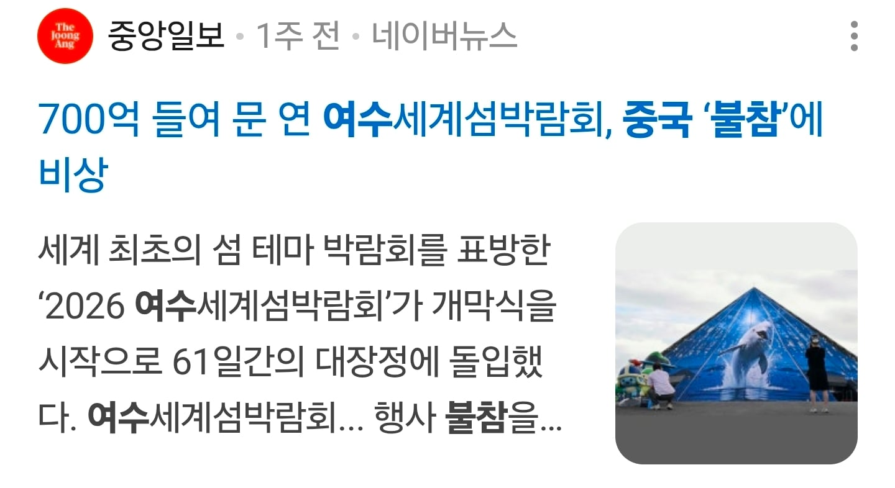
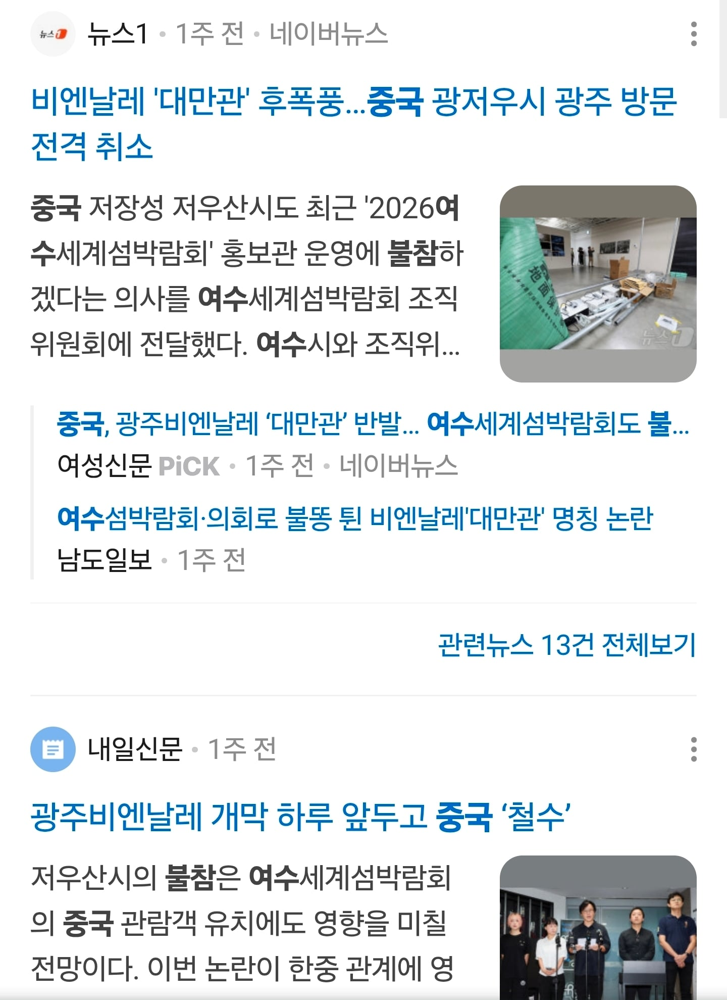

좆망각 나온건 다 피함
무빙 기막히네;;


좆망각 나온건 다 피함
무빙 기막히네;;
걍 대만 언급해서 불참선언 한거잖아
ㅈ망한 행사에 중국이 참가하게 둘순없지..
그렇다면..'대만을 언급한다록 한다'
존나 웃긴게 원래는 참가하려고 했었다는거임 ㅋㅋ 광주가 찐빠내서 안한다고 함
무슨 찐빠를 냄? 중국돈 먹었냐고 욕 먹다가 대만 개별참여 시킨다니깐 중국이 그럼 우리 안함 ㅅㄱ 한건데
https://www.bbc.com/korean/articles/cddvz14zd1no
그러니까 그게 찐빠라고 다른 곳도 아니고 광주잖아 그럼 중국을 불참시키더라도 대만을 받아야지
애초에 중국 눈치 봐서 대만 예술가들한테 설명도 안하고 은근슬쩍 대만 뺀게 정상임? 내가 곱게 표현해서 찐빠라고 한거지
그래서 지금 대만관으로 전시 중이라니깐? 중국은 빠졌고
그래서 그 과정을 곱게 표현해서 찐빠라고 했잖아
다른 곳이면 몰라도 광주가 음습하게 대만 예술가들한테 말도 안하고 대만 빼고 격하시킨게 그럼 뭐라고 할건데?
대만 문화부에서 정식으로 항의한게 별 것도 아닌가봐?
광주라면 당당하게 중국이 뒤에서 음습하게 지랄하는데 우린 중국 빼고 가겠다 이래야지
그 ‘찐빠’가 대만에게 행한 결례라면 맞는데, 중국에 찐빠를 낸 게 아닌데? 기관관에서 다시 국가관으로 바꾼 게 중국에 대한 찐빠가 아니잖아? 중국이 자기들이 기분나빠서 안 한다고 한거지
그래서 내가 언제 '중국'한테 찐빠 냈다고 함? 니 상상속에서?
도대체 하지도 않은말 끼워넣는건 어디서 배움?
그래 걍 막 가자 야 솔직하게 저게 찐빠냐 씨발 의도를 가지고 그냥 음습하게 중국한테 깨갱했다가 걸리니까 다시 살린거지
니가 무슨 말을 하는지는 알겠는데, 니가 저 위에 광주가 찐빠내서 중국이 안 한다고 했다며ㅋㅋ니 논리대로면 음습하긴 해도 결국 대만관 부활 시켜준거 아님? 그 과정이 중국에겐 찐빠로 느껴진 거고
내가 무슨 말 한지 모르네 곱게 표현해서 찐빠라고
내 논리대로가 아니라 나온 사실이 음습하게 행동한건데?
애초에 정정당당했으면 사실대로 밝히면 되지 참가자들도 모르게 하는게 음습한거지 아냐?
그러니까 부활만 시켜주면 되는거임?
이번 논란이 불거진 후, 한국의 예술가 단체 '검열에 반대하는 예술인 연대'는 주최 측의 행태가 '정치적 검열'이나 다름없으며, 이번 논란에 대해 여전히 아무런 설명이나 사과도 내놓지 않고 있다고 지적하며 지지를 표명했다.
우리나라 예술가들도 문제라는데?
아니 그니깐 이 과정이 문제가 있었고 그걸 니가 음습하게 느꼈다는건 나도 어느 정도는 동감하는데 중국은 이 찐빠때문에 나간게 아니라 그냥 지가 삔또 상해서 나간거잖아. 애초에 중국이 여기에 참여하는 경우의 수는 대만이 국가관이 아닌 형태로 참여하거나 아예 참여하지 않는 수밖에 없는데 그걸 안 들어주니 나간거 아님?
그러니까 내가 언제 중국한테 찐빠했다고 하는건데???
한적도 없는 말을 하네
음습하게 느낀게 아니라 음습한거니
우리나라 예술가부터 대만까지 다 까는데
정팅팅은 BBC 중국어 서비스와의 인터뷰에서 이 소식을 매우 수동적인 방식으로 접하게 됐다고 토로했다.
"다른 예술가의 친구가 포스터를 보고 '대만관에 참가한다고 하지 않았어? 왜 대만관은 없어?'라고 물어서 알게 됐습니다."
이번 행사에 초청받은 대만 예술가 및 큐레이터 10명은 8월 중순 '검열받는 대만관'이라는 제목의 공동 성명을 통해 "왜 참가자들이 자발적으로 정한 명칭이 정치적 제약을 받아야 하는가"라며 의문을 제기했다.
대만 문화부 또한 "대만은 물러서지 않을 것"이라며 항의의 뜻을 밝혔다.
한편 대만 문화부는 이에 대해 한국 측의 설명이 잘못됐다며 반박하고 나섰다. '대만관' 명칭이 갑작스럽게 변경된 모든 과정을 관련 서신을 통해 확인할 수 있다는 것이다.
그리고 막말로 자기들 이름르로 올림픽도 못 나오는 국가가 대만인데 대만이 ioc에 뭔 말은 못 하잖아? 대만 중국이 같이 참여하는 대부분은 저런식으로 넘어갈 텐데
그래 그렇게 넘어가지 그런데 그게 다른 곳도 아니고 광주가 할 짓이냐?
광주가 가진 이미지가 양안관계에 대해 그게 다른 곳도 아니고 광주가 할 짓이냐 라는 얘기를 들을 만큼의 연관이 있음?
1995년에 창설된 광주비엔날레는 아시아에서 가장 오랜 역사를 자랑하며, 가장 영향력 있는 국제 현대미술 전시회 중 하나다. 1980년 광주 민주화 운동을 기념하고, 자유·인권·평화와 같은 핵심 가치를 고취하기 위해 시작됐다.
자유·인권·평화와 같은 핵심 가치를 위해서 시작된거니까^^
중국 뺀다고 뭐 광주 비엔날레에 흠집이라도 가? 오히려 정정당당하게 빼는게 더 전시회 기조에 맞는거지
또한 황 교수는 각국 정부·기업·기관들이 "중국과의 외교 관계나 시장을 잃을까 두려워 자가 검열에 나서고 있다"며 이번 광주비엔날레 사례도 바로 이러한 흐름을 보여준다고 했다.
자가 검열하는게 자유 인권 평화랑은 안 맞잖아요
비꼰건가 몰라서 쓴건가
시발 나 영감쟁이네
아 중국돈 없으면 어쩔쓸까
렉카야 별 좆같은 사족을 달고앉았냐
중국 : 딥씨크야, 참석해?
딥씨크 : 지피티가 가지 말래
비엔날레는 왜 병신짓해서 자살했는지 모르겠음
??? : 중국도 아는 좃망각 너만 모름
비엔날레가 왜?
대만
광주비엔날레랑 여수섬엑스포랑 뭔 상관임 대체
광주비엔날레는 연례행사 아냐?
정확히는 2년주기
셰셰
중국 안 오면 잘 한 거 아니냐
저새끼들은 맨날 저렇게 삐지고 빠지냐 애새끼들도 아니고
아겜도 안나온다하지않았나
따거 쎄쎄
이것만큼은 대국이다